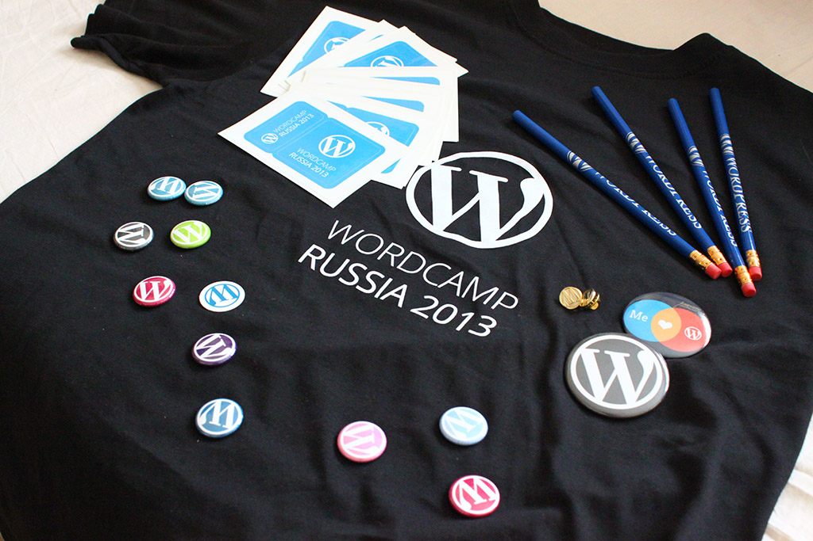
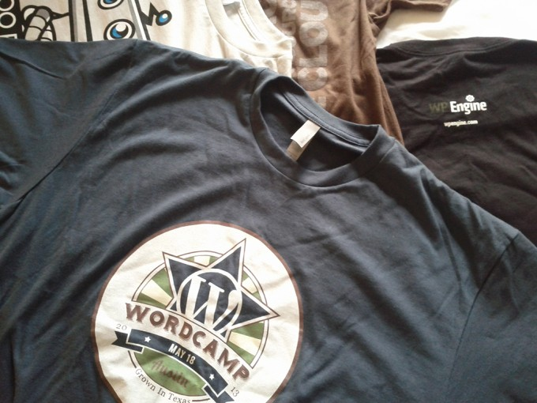

If you have ever planned a WordCamp or any other similar event, you know that it’s a lot of hard work – speakers wrangling, volunteers, venue, food, drinks, video, photos and everything else. And now that it’s all over, let’s talk about WordCamp Russia.
Expound for WordPress.com
The magazine-style theme Expound has just been released for WordPress.com users. Some slight changes and updates will be pushed back to the self-hosted version in the coming weeks.
WordPress Speed and Performance Session from WordCamp Russia
I gave this talk in a couple of weeks ago at the very first WordCamp Russia 2013 which was a big success (will publish a recap separately).
It covers most of the basics: what is site speed and why it’s important, a little bit of object caching, transient caching, page caching, opcode caching, browser caching, image compression, etc. Before you hit “Play”, please note that the video is in Russian :)
If you have any questions, I’ll happily reply via comments or Twitter, both in English and Russian.
WordCamp Russia is in less than a week!

I first thought of making a WordCamp in Russia a little over three years ago, when I was running a web development shop in Moscow. I had filled out my application form and was a single click away from applying. I don’t quite remember what stopped me back then, but whatever it was, thank god!
I had no idea what it is like to organize a WordCamp, in fact, I haven’t been to a single WordCamp back then, except for a live stream or two. A lot of things have changed in the past three years: I attended, spoke and volunteered at quite a few WordCamps, I ran a monthly WordPress meetup for over a year, I made friends with many pro WordCamp organizers across the planet, and today I’m happy to announce that…
WordCamp Russia 2013 is this Saturday! If I had to express my excitement in exclamation marks, the MySQL server would try to return a result set which is too large and fail with a timeout error.
Everything is going fairly smoothly and we’re slowly approaching that OMGWTFBBQ planning phase. Watch out for recap posts in the coming weeks and don’t hesitate to visit us if you’re in Moscow this weekend.
get_template_fart() or Things I Wish I Had Known Before Developing a WordPress Theme
I gave this talk at WordCamp San Francisco 2013. I was so nervous that I said get_template_fart() instead of get_template_part() at around 2:43.
Slides and reference links right here. Let me know what you think!
WordCamp San Francisco 2013 Recap
This was my second WordCamp San Francisco, and I absolutely loved it. I haven’t attended too much of the sessions, most notably: Mark Jaquith on deploying, code UX by Nikolay Bachiyski, funny theme stories by Ian Stewart, introduction of the O2 theme by Beau Lebens, roles and caps by Andrew Nacin and obviously State of the Word, by Matt Mullenweg, speaking of which, I was named “recent rockstar” for the 3.6 release cycle (along with quite a few other awesome folks), which I’m so proud of.
Speaking at WordCamp San Francisco 2013
I’m speaking about theme development at WordCamp San Francisco this year. I would love to tell you more about it, but I should probably go work on my slides.
Expound: A Free Magazine Theme for WordPress
Meet Expound — a free magazine theme for WordPress. Freshly baked, straight out of the oven, filled with _s goodness, a responsive layout, wicked support for featured posts and more!
Expound was initially built for WP Magazine, a little blog with a big goal to change the perception of WordPress in Russia. It supports up to five featured posts on the home page, post thumbnails, custom excerpts, threaded comments, a sidebar for your widgets, a related posts section built right in, and an awesome responsive layout to keep your readers reading, wherever they are.


You can get Expound from the WordPress.org repository, and don’t hesitate to give a thumbs up if you like it. Enjoy!
Don’t do_shortcode
Shortcodes are pretty cool, and the do_shortcode function is pretty neat as it can parse and execute shortcode callbacks from arbitrary strings, but that function invokes a fairly large regex every time it is called.
That regex looks for all registered shortcodes within a string. For each match, it runs a replacement with a callback function, which also take the time to parse the shortcode attributes, before finally calling the actual callback function that’s been registered with add_shortcode.
Regular expressions are pretty fast in PHP, especially for short strings, but do we really have to have WordPress do all that extra work, when all we really intended was to call our shortcode callback function?
echo do_shortcode( '[foo]' ); // Boo echo foo_shortcode_callback(); // Yey!
I ran a quick search in the plugins directory, using the following regex:
do_shortcode\(\s*['"]\[
Not the best crafted regex, but it’s supposed to look for calls to do_shortcode followed by a string literal starting with an opening square bracket. Obviously it might get a few false positives for special cases, but it also misses quite a few matches where the shortcode string is put into a variable first.
I found over 600 entries in over 270 plugins, including some of my own. Guilty! So the lesson I learned today is: don’t use do_shortcode when you can use your callback function directly, which is much more efficient.
WordPress Turns 10!
Ten years of WordPress, wow! I started a simple tech blog as a hobby using WordPress 2.6 over five years ago. Today I work on some of the largest WordPress instances in the world, I write plugins and themes, and contribute to WordPress Core. WordPress has changed my life.
I’m co-organizing a WordPress anniversary meetup tonight here in Moscow. We’ll be looking through some of the WordPress releases, and maybe peek into b2. We’ll also talk about translating WordPress themes and plugins into Russian, so come join us if you’re in town.
WordCamp Austin Was a Blast!

Austin has always been on my list of places to visit, and now that I did I know it was totally worth the long travel. Huge WordPress community, very friendly people and a well organized WordCamp, not to mention that wonderful food experience.
I met and chatted with a lot of new folks – developers, designers, bloggers, business owners and beginners eager to use and learn WordPress. It was so overwhelming, in a good way obviously, and the BBQ – so delicious! The unofficial CigarCamp was the perfect way to end the day.
Dev Day on Sunday was a total blast, that’s where all the super geek talk happened over pizza. That’s where I was able to get a few minutes on stage to talk about contributing to WordPress and encouraged people to chime in.
So huge props to everybody who made it happen: organizers and volunteers, speakers, sponsors, attendees, and a very special thanks to the WP Engine folks for hosting Dev Day.
Hope to make it next year!
Don’t Hide the Fact That You’re Using WordPress
There are quite a few blog posts, plugins and hacks suggesting to hide the WordPress version number, or hide the overall fact that you’re using WordPress. Don’t do it — it’s pretty useless.
There are hundreds if not thousands of ways to not only find out the fact that you’re using WordPress, but also find out the exact version number, regardless of any plugins or hacks changing or hiding the “generator” meta tag, the readme file and so on. A great post by my brother Gennady illustrates that.
Security
Most of these “hide my WP” solutions tend to market themselves from a security standpoint, especially with the recent botnet attack on WordPress sites. The truth is that these attacks don’t really care which version of WordPress you’re running. In fact, they don’t even care whether you’re running WordPress at all! How? Well that’s easy, they just take your domain and blindly fire POST requests to a file called wp-login.php, even if you’re running a non-CMS pure HTML website.
The same applies to known theme and plugin vulnerabilities. Go ahead and check your web server’s access logs, there’s a pretty good chance you’ll find requests to timthumb.php even though none of your themes or plugins use the TimThumb library.
So from a security perspective, the secret sauce is to use a strong password, as well as keep your themes, plugins and especially WordPress core up to date. Plugins such as Google Authenticator and Limit Login Attempts can give you that little extra protection.
The Ferrari Analogy
Sometimes people try hide the fact that they’re running WordPress because they’re afraid other humans will spot that and think they’re “unprofessional” or cheap. Well WordPress is the most professional content management system known to human kind, trusted by some of the largest companies worldwide and although free and open source, certainly not cheap.
When you buy yourself a new Ferrari, do you remove the Ferrari logos before showing it to your friends? No. Although if you did, it would still be obvious.
To wrap that up — don’t hide the fact that you’re using WordPress. Use a strong password, keep it updated and drive it with pride. If you bought a premium “hide my WordPress” plugin, you should ask for a refund and buy something useful instead.
Using get_template_part within Shortcodes
The get_template_part function is one of the most useful things available to WordPress theme developers. Although mostly used in themes for public, get_template_part is often used in custom WordPress websites as an alternative to the PHP include or require.
When using get_template_part with the Shortcode API, there are two things you should always keep in mind:
- get_template_part executes .php files which (most likely) generates output
- shortcode callback functions are expected to return a string and not generate any output
So when calling get_template_part within a shortcode callback function, you’ll see that all the output generated by get_template_part is output before the post content, and not replaced inline.
The solution is to use PHP’s output buffering. Create a buffer in your shortcode callback before running get_template_part, clear the buffer and return the content right after. Here’s a quick example with an ads shortcode, which can insert your theme’s ads.php file contents anywhere within a post or page:
function my_ads_shortcode( $attr ) {
ob_start();
get_template_part( 'ads' );
return ob_get_clean();
}
add_shortcode( 'ads', 'my_ads_shortcode' );
The ob_get_clean() function stops buffering and returns whatever was output to the buffer after ob_start(). The same approach could be used with other functions and statement that generate output, such as include and require.
Attending WordCamp Austin 2013
Texas has been on my list for a while now and Austin sounds like a great place to start. Looking forward for some sunshine, good company, great food and an exciting WordCamp Austin 2013. Maybe even a roundhouse kick to the face.